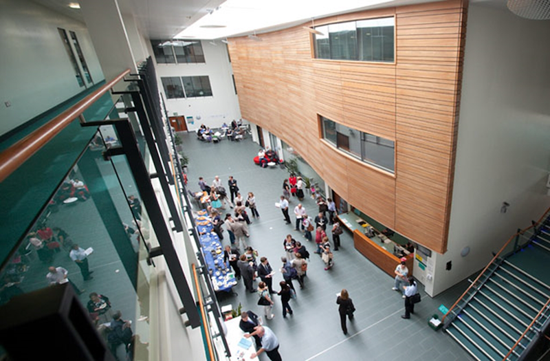

About us
Cantor College was established in 1989 to specialize in Computing and Design. At Cantor College, we want to give students the education they need to achieve their career aims, leaving them equipped with the knowledge, skills and experience to succeed. Cantor College gives you the opportunities that can give you the edge when you enter the world of work, through our teaching and our links to some of the world's leading researchers and employers. Our students have gone on to successful careers in a wide range of industries across the globe. Whatever your ambitions, our learning and support can help to get the most out of your time with Cantor College, both as a student and in your future career.
